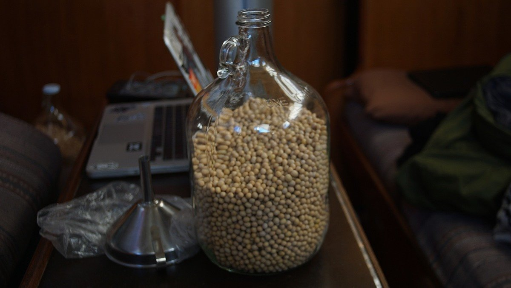

food storage
Purchasing food in bulk is ideal for long passages, but they’ll spawn insects or turn rancid if they aren’t stored in air-tight glass jars or food-safe plastic bins, away from light and moisture.
Containers. Aboard Pino, we carry a lot of glass jars of different sizes, and large plastic food-safe bins. We like to use plastic bins designed for drinking water to store grains and other dried goods, like legumes and rice. Food-grade plastics are identifiable by the recycling number on the bottom. 1, 2, 4 and 5 are food-grade, but also to check to see if they are food-safe.
We carry a lot of glass, and don't worry too much about it. After 5 years of hard sailing all of our jars are intact, even the large 5 L jar of umeshu did not break, only the plastic lid did. Glass does not leach chemicals and does not rust (although the lids might). We've swapped our metallic canning lids for plastic ones. On passages, we store glass jars on a shelf that is exactly their height. The jars have little wiggling room. Packing glass in tight-fitting spaces is key to preventing accidents. When the jars are full, the weight keeps them well-seated and secure. We like to use old socks as sleeves for glass jars stored in the settee lockers.
Light. Our storage shelves have a fabric curtain to protect them from light. B12 in nutritional yeast is light-sensitive, protecting it from the elements will ensure that it retains its nutritive value.
Temperature. The colder the space, the longer the food will last. The USDA states that "each 5.6°C (10.08°F) drop in temperature doubles the storage life of the foods."
Keeping food separate. We keep food purchased in bulk in separate jars. Keeping some types of grains, or dried goods separate helps to avoid problems, like weevils. If one batch is contaminated, the other might be fine. If the infested food is in a solid, and air-tight container, the hatched insects can't escape to infect other containers.
Oxygen. The presence of oxygen decreases the storage life of food and causes oxidative deterioration, and under the right conditions insects can spawn. An easy way to remove oxygen from a container, is to use oxygen absorbers. In Japan, many items in stores come with desiccants. Overtime, we've amassed many and re-use them. Every time you open a jar for a serving of grains, oxygen comes in which hastens spoilage. For this reason, we like to keep the bulk of our food in smaller jars instead of in larger containers.
Weevil-prone items include flours, cereal, rice, quinoa, pasta, oats, barley, corn and wheat berries. See our notes on provisioning